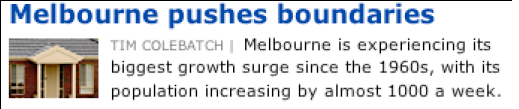
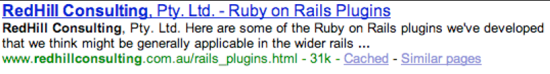
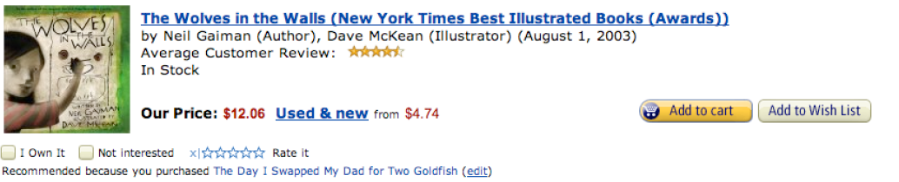
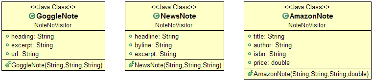
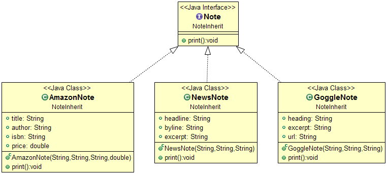
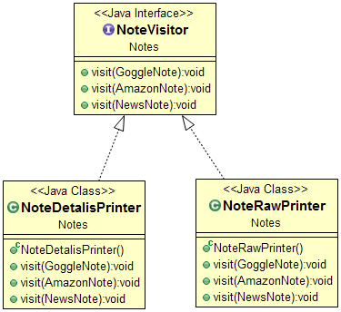
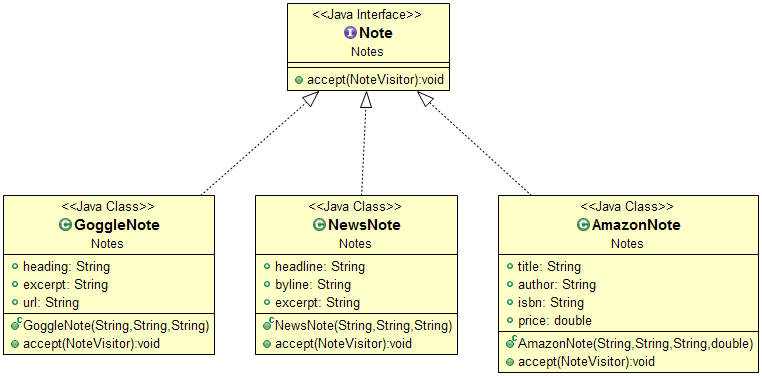

Visitor
Tenemos varios tipos de publicaciones que queremos unificar la forma en que se muestran
Noticias

Publicidad de google

Publicación de Amazon

Visitor
Los parámetros que tendrían cada uno de los objetos seria algo así

Una posible forma de poder unificar la forma de mostrarlos sería usar herencia y que todos tengan un método para imprimir

Pero si queremos agregar otra operación tenemos que volver a modificar toda la estructura de clase
El patrón Visitor me permite tener la flexibilidad de agregar nuevas operaciones sobre la estructura de objetos sin tener que tocar el código de la misma.
Patrón Visitor
Visitor es una forma de separar de la estrctura de objetos en la que opera. Cada nueva visitor concreto agrega una nueva operación
- Motivación: Poder agregar nuevas operaciones sin tener que cambiar el código de una estructura de clases. Una manera de seguir el principio de abierto para la extensión cerrado para la modificación.
Permite iterar una estructura de clases podiendo utilizar las distintas operaciones agregadas por el visitor
- Aplicabilidad:
- Una estructura de objetos contiene muchas clases de objetos con interfaces distintas, y se quiere realizar sobre ellos operaciones que son distintas en cada clase concreta
- Se quieren realizar muchas operaciones distintas sobre los objetos de una estructura, sin incluir dichas operaciones en las clases
- Las clases que forman la estructura de objetos no cambian, pero las operaciones sobre ellas sí
- Utilizar el patrón visitor si la jerarquía de clases es estable
Patrón Visitor
- Participantes:
- Visitor: define una operación de visita para cada clase de elemento concreto en la estructura de objetos
- ConcreteVisitor: Implementa la interfaz Visitor .Cada operación implementa un fragmento de la labor global del visitor concreto, pudiendo almacenar información local
- Element: define una operación accept con un visitor como argumento
- ConcreteElement (AssignmentNode): implementa la operación accept()
- Client: Elije que operación va a utilizar seleccionado el visitor apropiado
- Consecuencias:
- Facilita la definición de nuevas operaciones
- Agrupa operaciones relacionadas
- Añadir nuevas clases ConcreteElement es costoso. Utilizar para jerarquías estables
- Permite atravesar jerarquías de objetos que no están relacionados por un padre común
- Permite atravesar jerarquías de objetos que no están relacionados por un padre común
- El visitor puede acumular el estado de una operación al visitar la estructura de objetos, en vez de pasarlo como argumento o usar variables globales
- Rompe la encapsulación
Visitor
Implementación
Crear una jerarquía de clases de visitantes. Esta jerarquizar define un método visit() en la clase abstracta para que las clases concretas implementen en ese método la operación que se desea agregar. El método visit() acepta un solo argumento; un puntero o una referencia a una clase de elemento de la jerarquía de clases a la que queremos agregarle la operación o funcionalidad.

Cada operación que se va a agregar se implementa en el visitor concreto. En este caso tenemos dos formas de presentación de las publicaciones
Visitor
Implementación
- Creamos la interface o clase abtracta visitor
- Una de las clases que imprime. Cada operación que se quiera hacer sobre los objetos de la jerarquía va a terminar siendo una clase mas concreta de tipo NoteVisitor
Visitor
Implementación
Creamos una interface o clase abstracta Note de la que van a heredar las clases no relacionadas AmazonNote, GoggleNote, NewsNote con un solo metodos accept() que recibe un argumento simple que es la clase abstracta de la jerarquía de visitor

Visitor
Implementación
- Creamos la interface o clase abtracta Note
- Hacemos que las clases hereden de la clase Note e implementamos el método accept()
El método accept() que usa el argumento de tipo visitor que fue pasado como parámetro en el método para llamar al método visit y pasar como argumento la clase concreta en la que estamos (this)
El método visit utiliza la sobrecarga del método para encontrar la operación adecuada a el tipo de la clase que llama al visit
Visitor
Implementación
- Creamos 2 notas unas de Amazon y una de google
- Creamos un visitador simple y uno detallado
- Le mandamos a la nota el visitador detallado
-
No da la impresión detallada de cada una de las notas
Visitor
Implementación
- Le mandamos a la nota el visitador simple
-
No da la impresión simple de cada una de las notas
Visitor
Recordemos que hay que usar visitor en jerarquías de clases estáticas.
La estructura de clases que teníamos era:
Si queremos agregar un elemento RssNote por ejemplo tenemos que modificar la interfaces NoteVisitor y agregar el visit(RssNote) lo que implica tocar en esta caso cada una de las clases Concretas NoteVisitor, en este caso NoteDetailPrinter y NoteRawPrinter
Referencias
Head First Design Patterns
http://www.cogentconsulting.com.au/
http://es.wikipedia.org/wiki/Visitor_(patr%C3%B3n_de_dise%C3%B1o)
http://en.wikipedia.org/wiki/Visitor_pattern
←
→
/
#